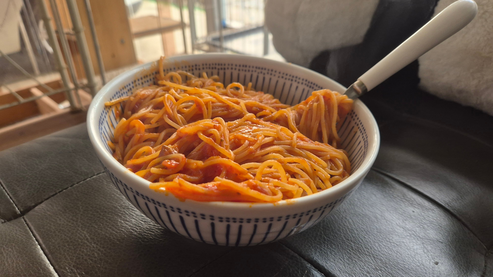
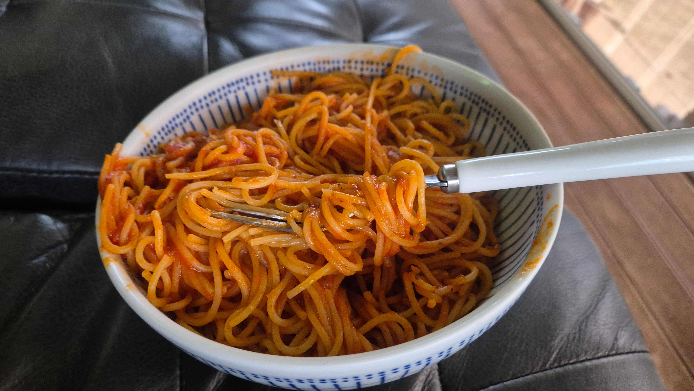
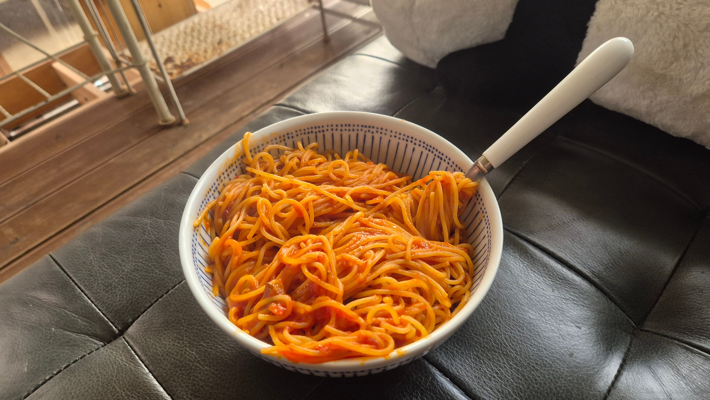

배고프다고 면 정량대로 안하면 이렇게 됨 ㅅㅂㅋㅋㅋㅋㅋㅋ



배고프다고 면 정량대로 안하면 이렇게 됨 ㅅㅂㅋㅋㅋㅋㅋㅋ
캬
뼈문돼답
마음에 와닿는 글이다
난 항상 저만큼 만들어먹긴해 ㅋㅋㅋㅋㅋ 든든하이 좋잖아?
근데 먹으면 딱 맞음
음.. 500원짜리 동전만큼은 너무 적어보이는데?
배고프니까 더 넣어야지
1인분이 500원짜리니까 2인분은 천원짜리만큼 넣으면 되겠지?
적은데?
저그시군요
으윽 울라리
라면 2그릇짜리 분량입니다...
적은게 맞네
아니다 2.5인분에 그릇은 냉면사발급입니다 ㅋㅋㅋㅋ
그럼 적은거지
밥 안말면 모자란데
결국 다먹는것까지가 완성
파스타면은 건강에 좋다고 해서 걍 다 쳐묵함
면 사면 봉투에 있는만큼하면 딱되던데
푸실리는 그람대로 딱 재야되긴하더라
쬐끔만 더 넣어볼까?
삶을때는 얼마 안되는것같은데 비벼놓으면 한솥이여
한그릇인데 문제라도?
소스 살 때마다
크림은 존나 느끼하고 토마토는 뭔가 단조로움
답은 크러시드 페퍼임
매운맛만 살짝 얹어줘도 안물리고 잘넘어감
청양고추로는 안되나요?
ㄱㅊ
ㄱㅅㄱㅅ
그래서 내가 알올밖에 안 만들어먹음
크림파스타는 걍직접 소스만드는거추천 우유랑 네모치즈만있으면됨 ㅋㅋ
저게 정량이다
난 노브랜드 베이컨사서 통째로 넣음
레시피좀 알려줘 맛있게생겼다
그냥 소스만 넣고 만든 것 같아서 아쉽네
고기랑 채소 향신료 좀 넣고 만들면 좀 더 맛있는데
아..쬐끔만더넣을까?
어떻게든 다 먹어서 1인분임
이 정도면 되겠지...? 하다가 2인분 만듬ㅋㅋ
세그릇은 좀,많긴해... 저양이면 두그릇이 한계일듯
그치그치. 정량대로 안하면 너무 적지.
항상 다 먹기엔 많고 또 남기기엔 애매해
혼자 다 먹으면 그게 1인분이지 ㅋㅋ
먹을때 챱츄챱챱츄 소리남
저 맛에 집 ㅍ ㅏ스타를 좋아함 ㅋㅋ 퍼먹는 느낌
근데 또 먹으면 먹어지는 양
나는 저울에 계량해서 만듬
1인분이 기준량이 아닐뿐ㅋㅋㅋ
면 넣기 전 - 에게? 1인분이 이정도라고?... 아닌거같은데 더 넣자
면 넣은 후 - 와우
1짤 왜케 합성같이 보이지 ㅋㅋㅋㅋㅋ
모든 면은 1인분 정량 100g으로 보면 되고 스파게티의 경우 면 한가닥이 얼추 1g임. 저울 없으면 100개 세면 됨.
그래도 다먹잖아 대지년
근데 다먹음 ㅋㅋㅋ
다먹으면 정량임